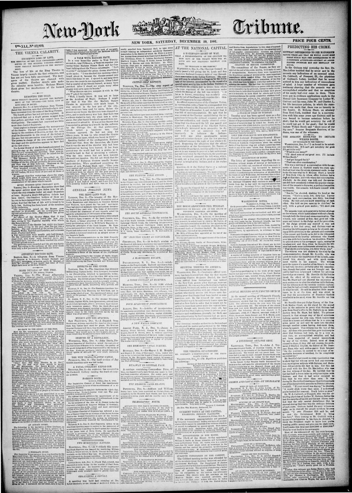

HN-253: Vienna Ringtheater fire: initial estimates exceed later official minimum
HN-253 · December 16, 1881 · Disasters, Accidents & Emergencies > Urban, Forest & Structural Fires > Building and venue fires

page scanRecorded finding
Vienna Ringtheater fire was 8 December 1881; 16 December is seed publication. Provisional deaths differed widely.
Discovery narrative
Source: Democratic Sentinel, p. 2 — original page; City of Vienna municipal archive retrospective — official context.
Report: A reprinted account of the December 8 Ringtheater fire in Vienna painted a harrowing picture of flames behind the stage curtain, blocked passageways, failing lights, and rescue attempts with blankets. It claimed nearly 700 deaths and offered competing theories involving an oil lamp or machinery associated with electric light. Vienna's own historical summary says fire broke out while stage lighting was being ignited and identifies at least 386 people who died.
Assessment: Contemporary catastrophe reporting corrected with a named municipal record. The paper's rough total is not the final official minimum, and its competing origin theories should not be treated as technical conclusions. Core disaster confirmed; first-report figures contextualized.
Curated audit flag
Class: Unverified lead (Q)
Recorded difference/concern: Vienna Ringtheater fire was 8 December 1881; 16 December is seed publication. Provisional deaths differed widely.
Assessment: Numbers have not been transcribed across every held newspaper issue.
Source links: https://www.wienerzeitung.at/h/ein-privattheater-als-todesfalle https://www.loc.gov/resource/sn83030214/1881-12-10/ed-1/?st=text https://historicnewspapers.sc.edu/lccn/sn84026909/1881-12-15/ed-2/seq-2/
Original archive images (3)
Authentic images retrieved from Library of Congress / Chronicling America, South Carolina Historic Newspapers (University of South Carolina) and Hoosier State Chronicles (Indiana State Library). Article crops are located using the archive's own OCR word coordinates and rendered at native crop resolution; article clips are assembled from the archive's own article-block images; page images marked "archive tiles" are stitched from the archive's own tiled page service at its 256-px tile cap; page images marked "issue PDF" are single pages rasterised from the archive's own issue PDF, with the page chosen by matching the headline against the PDF's text layer; page scans are reduced-size access renditions. No images were generated, mocked, or retouched.

Library of Congress / Chronicling America
Open larger view · Archive viewer (full resolution)

South Carolina Historic Newspapers (University of South Carolina)
Open larger view · Archive viewer (full resolution)

Hoosier State Chronicles (Indiana State Library)
Open full-resolution clip · Archive viewer (full resolution)
Source acquisition
Status: Archive images acquired
Authentic archive-owned image renditions were retrieved for this record and are displayed above. The source-acquisition manifest preserves the original pre-acquisition feasibility assessment.
Original seed
URL (preserved verbatim): https://newspapers.library.in.gov/?a=d&d=DMST18811216.2.18
Saved research report: Historical_Newspaper_Event_Research_253-277_2026-10-22.md
Evidence note: A newspaper report means a historical publication made a claim; it does not establish that claim as fact. Contemporary reporting is separated from later scholarly context and our own assessment.